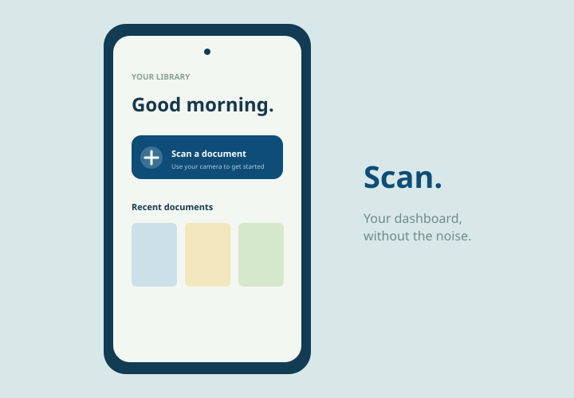
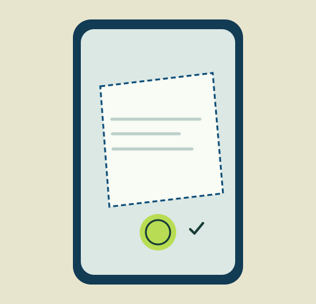
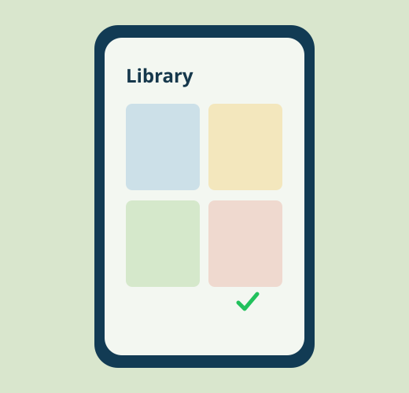

Scan on your terms
Automatic edge detection does the tidying. Switch to manual capture whenever you need more control.
Open-source scanning for Android
Scan, convert, and manage your documents right from your phone. Fast capture, tidy files, and no account standing between you and your paper.
Free to use · Local-first · No hidden tracking
What will you capture today?
Everything you need
Thoughtful tools for the documents you actually deal with, without the clutter you don't.
Automatic edge detection does the tidying. Switch to manual capture whenever you need more control.
Choose your output right when you scan. No extra exporting step later.
Turn images into PDFs, or PDF pages back into images, anytime.
Build a multi-page document in one smooth capture session.
Real thumbnails, clear file-type badges, and a built-in viewer keep every document close at hand.
Everything stays on your device. Nothing is uploaded anywhere.
Three simple moves
Frame it. Capture it.
Pick your format.
Find it when needed.
A closer look
Clear screens, useful feedback, and just enough structure to keep you moving.



Good software, visible
MyPaperScanner is open source because the tools we use for our everyday lives should be understandable, inspectable, and shaped by the people who use them.
Ready when you are
Android may ask you to allow installs from unknown sources. That is expected for an app outside the Play Store. Enable the permission, install, and you’re ready to scan.